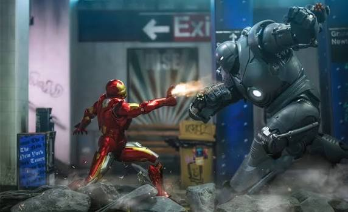

Ever since I was a little kid I watched the original Iron Man movie and loved the mechanical and highly advanced depitiction of the Iron Man suit. As I grew up however I started to think more deeply about what the story was trying to tell.
The beginning starting with a egotistical Tony Stark and kicking him down with the very weapons he creates sets the stage for him to grow as a person by experiencing a level of discomfort and loss he hasnt experienced before.
When he returns to Western society he tries shutting down the weapons devision of his company and Stark's own business partner Obadiah Stane fights for Tony to be fired or killed do to the vast income the company brings in.
Tony's growth as a person lets him see past this and fight for a overall better and safer world.
